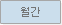
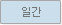

서비스 현황
사용자 현황
서비스 관리
정보 관리
게시판 관리
회원 관리
서비스 현황
총괄이용현황
API 이용통계
페이지 방문통계
검색어 통계
통계소통지도 통계
서비스 현황
페이지 방문통계
년
월 SGIS 플러스 이용현황


페이지뷰 :
(누적
)
-전월대비:
(
)
-전년동월대비:
(
)
방문자 수 :
명
(누적
명)
-전월대비:
(
)
-전년동월대비:
(
)
성과지표 월간 목표량
436,000건 대비
SGIS 플러스 이용현황
연간 페이지뷰
건
월평균 페이지뷰
건
데이터 표1
일자
건수
기다리십시요...